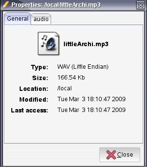
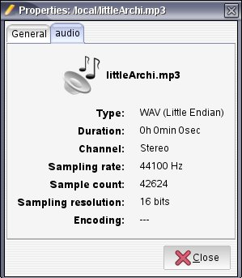
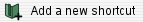
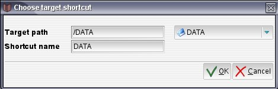
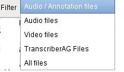

Copy copies current folder.
Copy copies current folder.
The file explorer tree aims at browsing the file system in order to select and open a file.
The file explorer contains the following parts:
Clicking on the icon left to a tree element or double-clicking on its name allows to open it and display its contents (or close it if it was already opened).
When a branch is opened, its contents are displayed in alphabetical order, according to current filtering rules (see filtering below). Items display an icon according to item type (folder, annotation file, audio file, other type), and the file or folder name.
Copy copies current folder.
 Open opens current file.
Copy copies current file.
Open opens current file.
Copy copies current file.
|  |  |
Shortcuts are aimed at avoiding loosing time in repeating file tree browsing by giving direct access to a previously "tagged" directory path.
Clicking on  button makes the shortcut creation dialog appear:
|  |
The target path for the shortcut must be defined in the Target path field.
The name of the shortcut must be defined in Shortcut name field (it is by default set to the target path base name).
The following button: gives access to the OS standard file browser composed of a file selection dialog through which one can select shortcut target path.
A shorcut can also be created with a right click on a folder thanks to the button "add to shortcut" from the contextual menu.
 Delete shortcut deletes shortcut.
Delete shortcut deletes shortcut.
|  | The Filter combo on top of the subwindow allows to filter displayed directories contents, to show only files of selected file type:
Importable file formats can be configured in the formatAG.rc file (see TranscriberAG Configuration Manual) Notice: TranscriberAG displays usual media files. For opening others formats compatible with FFmpeg, use "All files". |